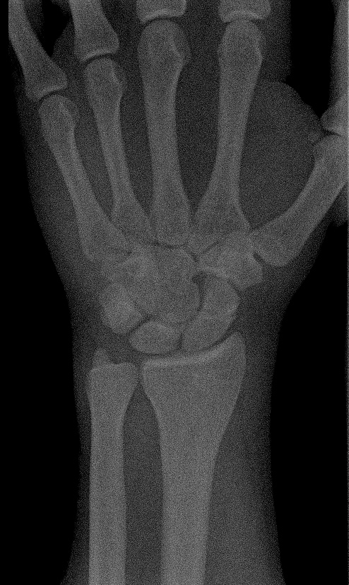

ORIGINAL (RAW • RUÍDO 78%)

2ª Opinião • Assistente XAI
Grad-CAM Ativo
Anomalia de densidade detectada: 91% de similaridade com traço de fratura oculta.
Relevância da Ativação:
Solicitando 2ª opinião: suspeita de fratura oculta após realce de ruído...
Dr. Roberto (Teleradiologia) está analisando a lâmina...